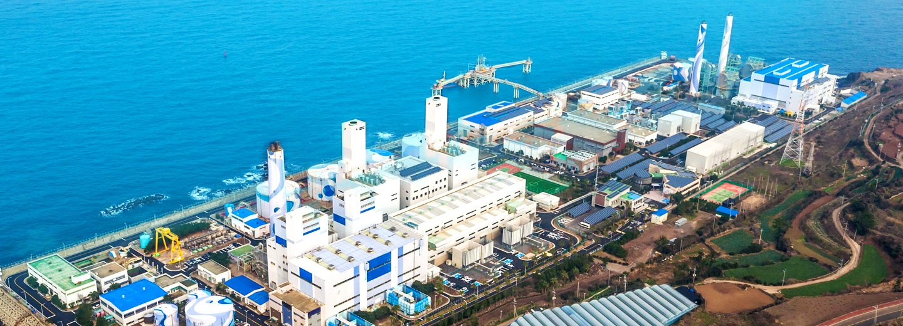

청정제주의 전력공급을 책임지는 친환경 발전소
제주발전본부
 1982년 11월 10MW급 기력발전소 준공을 시작으로 30여년 넘게 제주도의 안정적 전력공급을 책임지고 있는 제주발전본부는 총 설비용량 482MW로, 제주지역 전력사용량의 약 35%를 담당하고 있는 제주도 최대 전력공급단지입니다.
천혜의 관광지인 제주도 최북단에 위치하고 있는 제주발전본부는 기력 2기, 내연 2기, 복합 2기, 태양광, 풍력 발전시설 등 다양한 발전설비를 보유하고 있으며, 친환경 발전을 선도하고 있습니다.
또한, 2020년 LNG 발전을 시작으로 제주도가 추진하는 「Carbon Free Island」 사업을 선도하는 친환경 발전소로 거듭나게 되었습니다.
Carbon Free Island 친환경 발전소
제주발전본부는 천혜의 자연을 간직한 제주의 환경을 지킨다는 신념으로 2014년 6월부터 기존의 벙커C유를 친환경 바이오중유로 대체하여 운영하고 있습니다. 바이오중유는 동식물성 유지 원액이나 알코올을 유지와 반응시켜 만든 지방산 에스테르, 또는 그 둘을 혼합하여 생산하는 연료로, C중유 대비 황분 및 질소함량이 매우 낮아서 온실가스 주범인 황산화물(SOx)과 질소산화물(NOx) 등의 배출가스 저감효과가 뛰어난 친환경 에너지원입니다. 또한, 2016년 8월 한림읍 금악리에 위치한 상명풍력발전단지(3MW×7기)가 준공되어 제주도의 카본프리 아일랜드(탄소 없는 섬) 정책에 적극 기여하고 있습니다. 제주발전본부는 제주지역 최초 LNG복합발전소를 운영하고 있습니다. 29개월(2016.5~2018.10)의 공사기간 동안 한 건의 안전사고 없이 적기 준공하여 전력수급 안정과 에너지 자립에 기여함은 물론, 청정연료인 천연가스를 사용함에 따라 오염물질 배출을 최소화 하였고, 최첨단 탈질설비를 비롯한 최신 환경저감 설비를 설치하여 신재생에너지로의 전환을 선도하고 있습니다.
2015년 Clean Sys 우수사업장 지정, 2016년 환경부 녹색기업 지정
제주발전본부는 기후변화협약에 대응하고자 온실가스 감축활동을 적극적으로 추진, 온실가스 관리체제를 국제기준으로 구축하고 그 성과를 인정받아 2008년 발전회사 중 최초로 온실가스 배출관리 체제와 배출량을 환경부로부터 인증받았습니다. 이를 바탕으로 2014년 녹색기업대상 대상(大賞)을 수상하였으며, 2015년 환경부 선정 Clean Sys(굴뚝원격 감시 시스템 : Clean System) 우수사업장으로 지정되었습니다. 특히 2003년 환경부로부터 제주도 최초로 녹색기업으로 지정받은 이후 2019년까지 5회 연속 제주도 내 유일한 녹색기업으로 지정받아, 명실상부한 친환경 사업소임을 입증하였습니다.
지속적인 환경 친화경영을 통한 23년 연속 녹색기업으로 선정
최신식 설비로의 교체 운영으로 인천발전본부는 고효율 복합발전설비의 안정적 운영을 통해 수도권의 전력수급 안정에 큰 역할을 담당하고 있습니다. 1970년부터 시작된 인천지역 발전의 역사를 고스란히 간직한 인천발전본부는 지역사회의 일원으로 사회봉사활동, 문화행사 지원 등 사회공헌 활동을 적극적으로 추진하고 있으며, 철저한 환경관리와 지속적인 환경 친화경영을 통하여 1996년부터 7회 연속 연속 환경부의 녹색기업으로 인증 받는 등 깨끗하고 청정한 지역 만들기에도 앞장서고 있습니다.
3無(無재해, 無고장 無사고) 발전소
'오직 무고장, 무사고' 라는 미션 하에 전호기 무고장을 목표로 설비별 특별관리를 하고있습니다. 2019년 '무재해 28배수'(1983.1.1 ~ 2020.11.) 달성, 전국 품질분임조 경진대회 '17년 연속 대통령상’ 수상 등 우수한 품질을 바탕으로 제주도내 안정적인 전력공급을 위해 최선을 다하고 있습니다. 또한, ABC(Always Be Careful) 원칙을 준수하여 최고 수준의 안전사업장을 구현하고 있습니다.
무재해 28배수 달성(35년간)
2016.11
2018 Asian Power Awards
"올해의 발전소 상"수상
2018.09
2020년 대한민국
녹색경영대상 종합대상 수상
2020.11
제주발전본부 설비현황
| 기력 | 내연 | LNG복합 | 풍력 | 태양광 |
|---|---|---|---|---|
| 150MW | 80MW | 228.6MW | 21MW | 2.35MW |